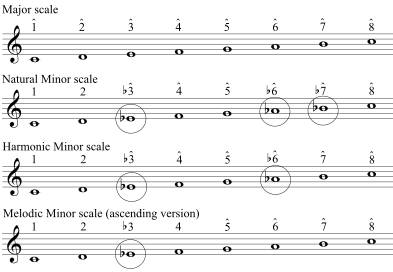
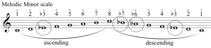

Section 3.1 Minor Scales
¶There are three minor scales: the natural minor scale, the harmonic minor scale, and the melodic minor scale. Play or sing through each one and notice the differences.

The melodic minor scale has an ascending version, shown above, and a descending version that is the same as the natural minor scale.

So far, we have looked at minor scales in relation to the major scale. However, we will typically encounter minor scales in music using minor key signatures.